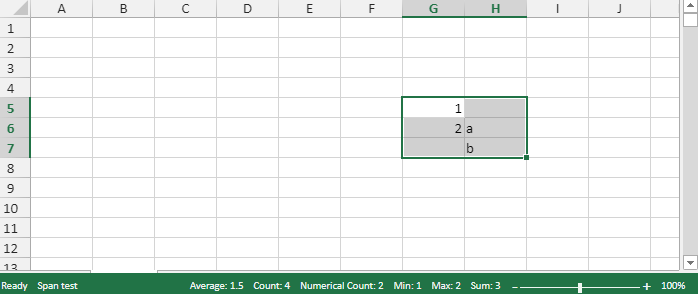
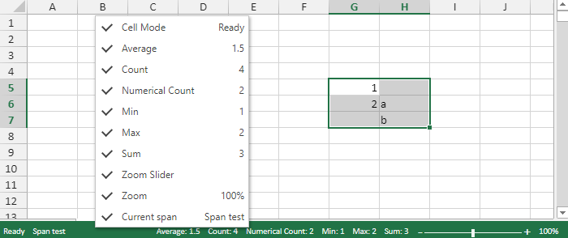

SpreadJS provides users with a status bar that appears at the bottom of the worksheet and reveals information about the current cell mode, average, count, numerical count, minimum, maximum, sum of the selected cells, zoom slider and zoom percentage.
The table shared below describes all the options available in the status bar along with their brief description.
| Options | Description |
| Cell Mode | This option displays the cell mode of the selected cell. |
| Average | This option displays the average from the selected cells that contain numerical values. |
| Count | This option displays the number of selected cells. |
| Numerical Count | This option displays the number of selected cells that contain numerical values. |
| Minimum | This option displays the minimum numerical value in the selected cells. |
| Maximum | This option displays the maximum numerical value in the selected cells. |
| Sum | This option displays the sum of the numerical values in the selected cells. |
| Zoom Slider | This option displays a slider with plus and minus buttons for changing the zoom options. |
| Zoom (100%) | This option displays the zoom level. Select the zoom percentage to display a dialog that allows you to set additional magnification options. |
The status bar provides support for the following six themes as well as SpreadJS Workbook themes.
Refer to the following code in order to show the status bar in the worksheet.
| JavaScript |
Copy Code
|
|---|---|
// Create status bar, add it to the host and bind it in context. var statusBar = new GC.Spread.Sheets.StatusBar.StatusBar(document.getElementById('statusBar')); statusBar.bind(spread); |
|
You can also customize the status bar by adding your own custom option (for example - Span test) as shown in the below image.
Upon right clicking on the status bar, the status bar context menu appears. In the context menu, you can see that the custom option (Current span - Span test) is added to the list of available options as shown in the below image.
Refer to the following code in order to customize the status bar in the worksheet.
| JavaScript |
Copy Code
|
|---|---|
// Customize the status item through GC.Spread.Sheets.StatusBar.StatusItem var spanItem = new GC.Spread.Sheets.StatusBar.StatusItem('spanItem', { menuContent: 'Current span', value: 'Span test' }); var statusBar = new GC.Spread.Sheets.StatusBar.StatusBar( document.getElementById('statusBar'), { items: [spanItem] } ); statusBar.bind(spread); // Customize the status item by extending gc.spread.sheets.statusbar.statusitem var statusbar = new gc.spread.sheets.statusbar.statusbar(document.getelementbyid('statusbar')); statusbar.bind(spread); var statusitem = gc.spread.sheets.statusbar.statusitem; function labelitem(name, options) { statusitem.call(this, name, options); } labelitem.prototype = new statusitem(); labelitem.prototype.oncreateitemview = function (container) { var item = document.createelement('div'); item.innertext = this.value; item.style.background = 'blue'; container.addeventlistener('click', function (e) { // do click }); container.appendchild(item); }; labelitem.prototype.onupdate = function () { // do something when context menu item check changed }; statusbar.add(new labelitem('labelitem', { menucontent: 'test label', value: 'test option' })); |
|
Refer to the following code in order to remove the status bar from the worksheet.
| JavaScript |
Copy Code
|
|---|---|
// Removing the status bar
statusBar.dispose();
|
|